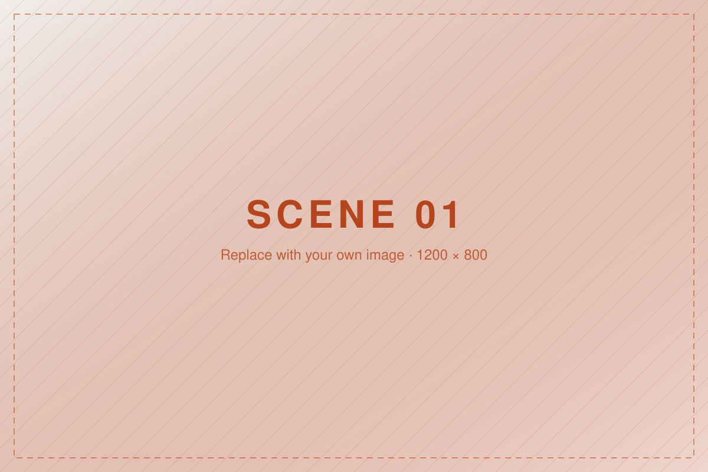
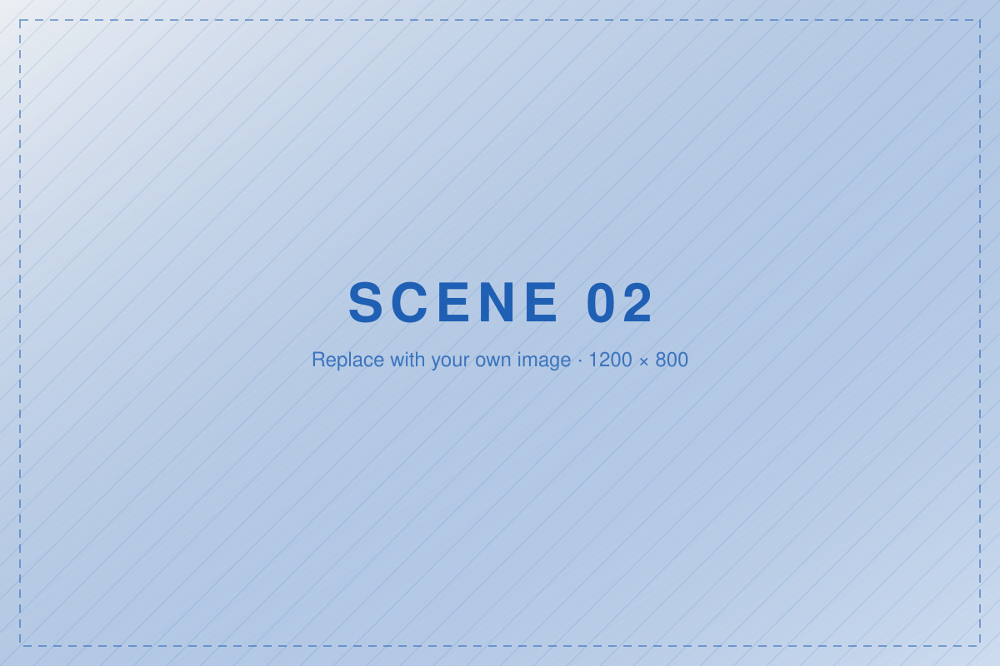

A chapter is one idea
A scrolling narrative is not one long article. It is a sequence of chapters, each carrying a single idea, separated by a change in what the reader sees. If you cannot say what a chapter is for in one sentence, it is doing two jobs and should be split.
Keep your paragraphs short. Readers scroll faster than they read, and the line length here is deliberately narrow — around 65 characters — because that is what people read comfortably.
Pictures carry the change
In a change-over-time story the images do the heavy lifting. The text tells the reader what to look at and why it matters; the image proves it.
Every image needs alternative text that says what it shows, not what
it is called. Swap the placeholders in images/ for your own.

A scene that holds still while you scroll

The picture stays put. This block of text scrolls over it.
In Week 7 you will make the picture respond as each step arrives.
Without JavaScript it still reads as a picture and three captions. That is the point.
Your moment of interaction goes here
A hotspot, a toggle, a before-and-after slider, a real choice. Something the reader does, that changes what they see. Scroll on its own is not enough: a page that only plays a film as you scroll is motion design, not interaction design.
Week 9. Recipes for hotspots, toggles and before/after sliders.
And then it ends
Endings are designed too. Decide what you want the reader left holding — a fact, a feeling, a question — and put that last.